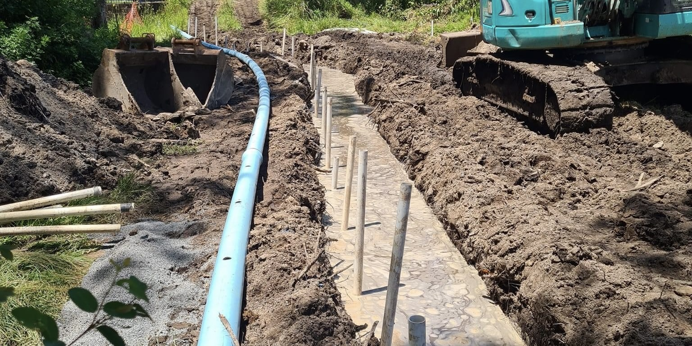
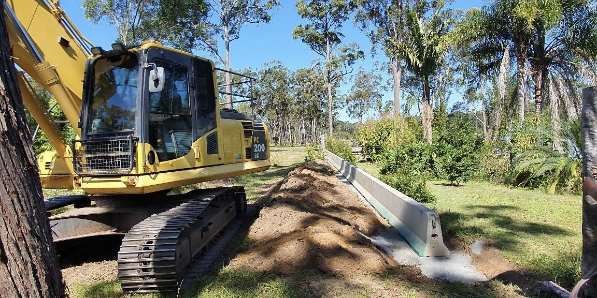

Civil Work
Chambers Constructions specialise in a broad range of excavations, earthmoving and civil works, where no job is too small.
The range of services we provide include:
- Subdivisions
- Bitumen Sealing
- Driveways
- Land Clearing
- Dams and Irrigation
- Site Leveling
- Footings and Foundations
- Pool Excavations
- House Pads
- Service Trenches
Pipeline Construction:
- Drainage
- Sewer
- Water
- Pump Stations
Our operators are highly competent, fully qualified, and dedicated to providing a safe and reliable service every time. We aim to deliver a service that you can rely on to complete your project on time and within budget. Contact us today to discuss your civil work needs.

